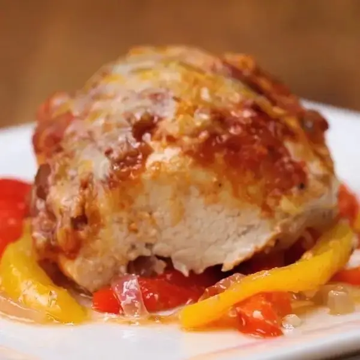

Chicken Fajita

Description
This Fajita Parchment Baked Chicken is
the perfect way to spice up your weeknight dinners.
The combination of peppers, onions, and chicken creates a
symphony of flavors that will leave your tastebuds very happy!
Ingredients
- parchment paper, or aluminium foil, 12x18 inches (30.5 x 46 cm)
- 1 chicken breast
- ½ red pepper, sliced
- ½ yellow pepper
- ¼ red onion, sliced
- 3 tablespoons salsa
- 1 teaspoon taco seasoning
- 1 tablespoon mexican cheese blend
- 1 tablespoon olive oil
- salt andpepper, to taste
Preparation
- Preheat oven to 400°F (200°C).
- Fold the parchment paper in half, then open up.
- Thinly slice the peppers and onion and lay them on one half of the parchment paper.
- Drizzle on oil and sprinkle on salt & pepper.
- Lay the chicken on the peppers. Season with taco seasoning, salt and pepper, and spoon on salsa. Top with cheese.
- Fold the parchment paper over the chicken, and cinch the paper together by folding it over itself along the edges.
- Bake for 25-30 minutes or until internal temperature of chicken reaches 165˚F (75˚C).
- Enjoy!!